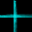

<body style="background-color: black; color: white; font-family: arial; margin-left: 18;">
drag mouse to the red box ;)
<br><br>
<div id="ttom" style="margin-left:0;font-size: 8;width: 10px;background-color:red;position:relative;">&nbsp</div>
<br><br>
<div id="dzt" style="background-color: #333; color: #ccc; font-family: arial; font-size:44px; width: 220px; height: 50px; overflow: hidden;"><div id="cvs" style="width: 20px; word-wrap: break-word; height: 50px;"></div></div> <span id="tst" style="visibility: hidden; font-family: arial; font-size:44px;">czech kocha biologie</span>
</body>
<script>
var alph = "abcdefghijklmnopqrstuwvxyz";
var mrgn = 18;
window.dest = document.location.hash.substring(1);
document.getElementById('tst').innerHTML = dest;
window.destwidth = document.getElementById('tst').offsetWidth;
document.getElementById('ttom').style.left = window.destwidth;
function GenerateStuffToFitTo()
{
 var has=0, nnow=0, tmp="";
 var width = window.iswidth;
 if (width>=window.destwidth && width<(window.destwidth+20))
 {
  document.getElementById('cvs').innerHTML=dest;
  window.clearInterval(window.todest);
  document.onmousemove = null;
 }
 else
 {
  while (has < width)
  {
   nnow = Math.floor(Math.random()*alph.length);
   document.getElementById('tst').innerHTML = alph.substr(nnow, 1);
   tmp += alph.substr(nnow, 1);
   has += document.getElementById('tst').offsetWidth;
  }
  document.getElementById('cvs').innerHTML=tmp.substr(0, tmp.length-1);
 }
}
function trackmove(event)
{
 window.iswidth = (event.clientX-mrgn < 30) ? (30) : (event.clientX-mrgn);
 document.getElementById('dzt').style.width=window.iswidth+'px';
 document.getElementById('cvs').style.width=window.iswidth+'px';
 document.getElementById('sspy1').style.left=(window.iswidth-57)+'px';
}
document.onmousemove = trackmove;
window.todest = window.setInterval("GenerateStuffToFitTo();", 80);
</script>